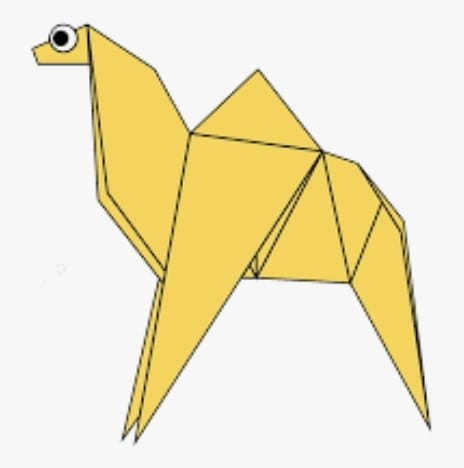
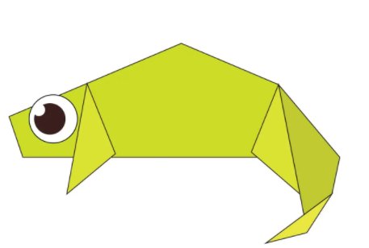
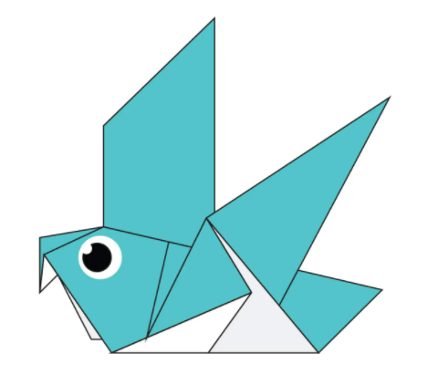
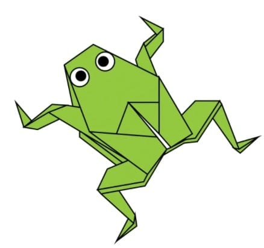
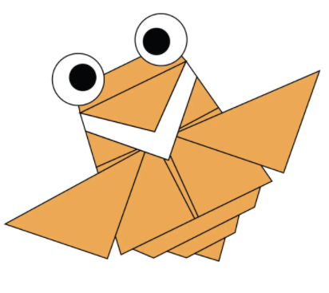
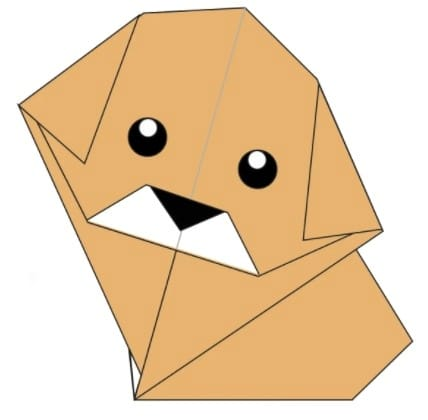

Origami Designs
About Us

Some facts about Camel
- Camels can drink as much water as they find at one time and store it in the hump
- Camel ears are furry
- Camels have specially designed feets to walk in sand

Some facts about Chameleon
- Chameleons are reptiles that are a part of iguana suborder
- Changing skin color is an important part of communication among chameleons
- Most chameleons have a prehensile tail that they use to wrap around tree branches

Some facts about Pigeon
- Pigeons are highly sociable animals.They will often be seen in flocks of 20-30 birds
- Pigeons are renowned for their outstanding navigational abilities
- Pigeons mate for life, and tend to raise two chicks at the same time

Some facts about Teddy Bear
- Morris Michtom created the teddy bear. However, when it was placed in the window of a shop it was not known as a ‘teddy bear’, but as ‘Teddy’s bear’
- Before teddy bears could be sold, Michtom had to get President Roosevelt’s permission to use his name. Which he did and so the era of Teddy’s bear began!
Some facts about Panda
- An adult panda can eat 12–38 kilos of bamboo per day!
- Pandas have carnivorous teeth, but they eat bamboo and fruit
- Pandas are good at climbing trees and can also swim

Some facts about Frog
- Frogs don't need to drink water as they absorb it through their skin
- A frog's call is unique to its species, and some frog calls can be heard up to a mile away
- Some frogs can jump over 20 times their own body length; that is like a human jumping 30m.

Some facts about Cicada
- Cicadas have one of the longest insect lifespansn
- Their lengthy life cycles may help them evade predators
- They can buzz louder than a lawnmower

Some facts about Dog
- Some have such good noses they can sniff out medical problems
- Some are fast and could even beat a cheetah!
- Dogs are about as intelligent as a two-year-old